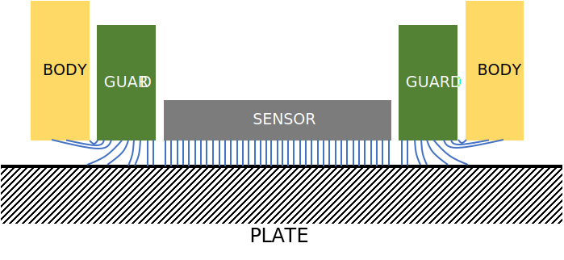

This document explains a stage mechanism which translates a glass sample perpendicular to the beam from a focus probe. The focus probe measures two distinct intensity peaks as the focused beam is reflected from the top and bottom surfaces of the sample. The displacement of the stage related to the intensity peaks is measured using a capacitance gauge. This measured displacement is corrected for the refractive index change from air to glass, and Abbe error. The resulting quantity represents an estimate of the sample thickness.
The system is driven by a single voice coil. These are a type of linear motor that uses the Lorentz force to drive a stage. Voice coil actuators are frictionless, have negligible hysteresis, and can be used to position a stage with extremely high precision. Displacement can be up to several inches, and force generated ranges from ounces to hundreds of pounds. The coil used in these designs has a peak force of 9 lbf and maximum displacement of \(\pm\) 0.12 inches. There are multiple common designs but all of them operate on the same basic principles. Shown here is a 'moving coil' design.
The stationary assembly consists of a magnet mounted on a ferrous cup that helps guide the magnetic field. The moving assembly is a length of wire (the coil) tightly wound around a plastic 'spool'. Current travels through the wire perpendicular to the magnetic field, producing a force that acts on the moving assembly according to the formula \(\vec{F} = \vec{I}l \times \vec{B}\), where \(\vec{F}\) is the force produced, \(\vec{B}\) is the magnetic field strength, current in the wire is \(\vec{I}\), and \(l\) is the total length of wire These relationships are shown in the first two figures.

In this formula the magnetic field and wire length terms are fixed, so the only way we can vary the actuator force is by changing the current going into the wire. The simplest way to do this is with power transistors, or a power operational amplifier. These designs use a Texas Instruments OPA549SG3 power op amp to create an output current directly proportional to an input current. The design used is shown in Figure X. Current output for this circuit design is $$i = \frac{R_2}{R_5 (R_1+R_2)} V_i$$
The voice coil can also be analyzed as an electro-mechanical system consisting of an RLC circuit and spring-mass damper. This will be done below after discussing the flexure assembly.
Two displacement sensors were used: Lion Precision capacitance probes and homebrew knife-edge sensors.
Capacitance probes use the definition of a classical parallel-plate capacitor, \(C = \frac{\epsilon A}{d}\), as a tool for measuring displacement. \(A\) is the sensor area, \(\epsilon\) is the dielectric constant, and \(d\) is the distance between plates. This equation does not address the effects of stray capacitance, second-order effects, and other deviations from the ideal model. A guard electrode is used to deal with stray capacitance and collimate the electric field lines between probe and target, making the probe behave more closely to an ideal parallel plate capacitor (see the illustration below).
From the equation we can see that larger sensors will create greater changes in capacitance for a given distance. We are measuring distance indirectly via capacitance, so a quality calibration is important. For this application the dielectric is air and \(\epsilon\) is a function of temperature, pressure, and humidity. If an application is extremely high precision this must be accounted for. A well-designed capacitance sensor system will have a resolution of single-digit nanometers or better. This is not the precision of the system - linearity, noise, environmental effects, and misalignment must all be considered when evaluating measurement uncertainty. The extremely high resolution and non-contact nature of capacitance probes makes them ideal for closed loop control of short travel micro-positioning systems. The probes used here have a range of 500 \(\mu\)m and resolution of 10 nm at 15 kHz.

Optical knife edge sensors (OKES) are cheap and reasonably precise position sensors that are becoming more common in precision control applications. There are various designs, this one uses a cheap off-the-shelf photointerrupter. These are commonly used as on/off switches or for rough position control in devices such as printers. Despite their intended use as on/off switches, if a knife-edge is used to gradually obstruct the photodiode then the voltage will slowly drop. This voltage drop is nonlinear at the extremes but reasonably linear in the center.

If only the center of the range is used and the device is carefully calibrated measurements with sub-micrometer precision can be obtained. One problem with this sensor is the relative short linear range. This can be mitaged by using an angled knife edge, such as an exacto hobby knife. This increases the linear range, but also creates even more reliance on good calibration, as well as knife-edge quality. Because of this the sensor assembly is very sensitive to physical disturbance. For this system xacto blades were used to increase the usable range. The sensor was calibrated using a capacitance probe as the reference.


This monochromatic confocal probe works by measuring how much light is reflected from the glass specimen. If everything in the illustration is held fixed except for the glass plate and the plate is moved to the left or right, the amount of light reflected from the plate will be maximum when the objective lens is focused on the top or bottom surface of the plate. This reflected light is measured by the photodetector, the double-pinhole subassembly exists to filter stray light and increase the signal to noise ratio. Typical output is shown below; the left peak is the bottom surfaace, and the right peak is the top surface.

The mechanism needs to translate with one degree of freedom, smoothly and with minimal deviation from a straight line. A mechanism can have up to six degrees of freedom: linear translation in x, y, and z, as well as rotation about the x, y, and z axes. The degrees of freedom a mechanism has are defined by Grublers equation, $$M_6=6(n-j-1) + \sum_{i=1}^j f_i$$ where \(n\) is the number of links in the mechanism, \(j\) is the number of joints, and \(f\) is the number of degrees of freedom at the \(i^{th}\) joint. Three options were considered, a simple two-bar linear spring, a four-bar compound linear spring, and a double-compound linear spring. Simple linear springs have one degree of freedom when considered as planar mechanisms but are overconstrained when analyzed as 6 dof mechanisms (due to out of plane motions that become possible), with a mobility of -2. The drawbacks of the two-bar linear spring can be outweighted by the simple design and ease of manufacture, but the error introduced is too much for this use case. Double-compound linear springs eliminate the overconstraint problem, but now we have a mechanism with \(M=2\). The double-compound rectilinear spring is much more complex than the previous choices, but has a mobility of \(M=1\). This guarantees true linear motion. The design used for this system is the double-compound rectilinear spring, shown schematically below. The translation stage has a range of 2.8 mm.

A tip-tilt stage for fine alignment of the sample is mounted on top of the linear translation stage. the actuators for this stage are two screws preloaded against bent flexure leaves. The system pivots around a screw at the corner of the stage farthest from the leaves. The range is found by measuring the largest posible z-movement. $$z = atan \left( \frac{z}{x}\right)=atan \left( \frac{3}{63}\right)=2.7^\circ$$ Resolution can be found by assuming that 1/4 of one screw turn is the finest adjustment possible. An M4 machine screw has a pitch of 0.7 mm, so \(\delta z = 0.25 z = 0.175 \) mm. $$\delta z = atan \left( \frac{0.175}{63} \right) = 0.16^\circ$$
The main point of concern with the electrical system is possible uncertainty contributions from the digital-to-analog and analog-to-digital converters, and the maximization of sample rate. The voltage resolution of an ADC is represented by the measurement range divided by the number of intervals. For a 12-bit ADC, which is what the MyRIO has, the capacitance probe resolution is: $$\frac{500 \ \mu m}{2^{12}}=122 \ nm$$ The voice coil is driven by a signal ranging from 0-5 : $$\frac{5 V}{2^{12}}=1.22 \ mV$$
The mechanical transfer function can be expressed as a lumped parameter model: $$\frac{X(s)}{F(s)}=\frac{1}{m_{eq}s^2+b_{eq}s+k_{eq}}$$ where \(k_{eq}, b_{eq}\), and \(m_{eq}\) are the equivalent stiffness, damping, and mass for the system. This model can be derived using Lagrange's equation. Several examples are available in the book Flexures, by Stuart Smith. We are only interested in the stiffness, natural frequency, and maximum displacement of the system; we will neglect calculating damping here. Since we know: $$\omega_n = \sqrt \frac{k_{eq}}{m_{eq}}$$ finding the equivalent mass and stiffness will provide the natural frequency. From the Lagrange analysis: $$m_{eq} = m_A + m_B/2$$ $$k_{eq} = \frac{4k}{L^2}$$ The linear stiffness of one flexure leaf is $$k_\delta = \frac{12EI}{L^3}$$ Throwing all of this together we find an equivalent moving mass just under half a kilogram, a stiffness of 30 \(\frac{N}{m}\), and a natural frequency of about 40 Hz.

The instrument operates via open-loop control. When a measurement begins the LabVIEW RT system sends a ramp voltage to the current amplifier. The output current drives the voice coil, which applies a force to the flexure system. As the flexure moves through a ramp displacement the intensity of light seen by the confocal probe varies, giving two peaks. The laser intensity and flexure displacement data are both passed to the real time system, which calculates the distance between the peaks.

The input to this function is two arrays of data. One represnts z displacement of the flexure system, the other represents intensity measured by the confocal probe. They are synchronized in time, when plotted against one another they look like the final figure in Section 4. The goal is to find the distance between intensity peaks.

All contributions are evaluated as Type B. The driving sources of uncertainty are ADC/DAC resolution, angular alignment of stage, electrical noise, and Abbe error. The contribution of Abbe error was minimized by moving the displacement sensor as close as possible to the displacement axis, measuring (and correcting) angular error in z-axis translation with an autocollimator, and using a reference sample of known thickness to calibrate out remaining Abbe error. ADC resolution for the confocal probe is particularly problematic because the signal to noise ratio is low. This is mitigated by taking extremely large amounts of data near the intensity peaks and averaging to remove noise. Thermal expansion can be neglected over the time period of one measurement. Uncertainty is calculated as the root sum square of the individual contributions. With a coverage factor of \(k=2\), the expanded uncertainty is: \begin{align} U &= \sqrt{u_{cp}^2 + u_{\theta}^2 + u_{vc}^2 + u_{pd}}^2 \\ t &= (z_2-z_1) \pm kU \\ t &= \Delta Z \pm 2 (0.93) \ \mu m \\ \end{align}